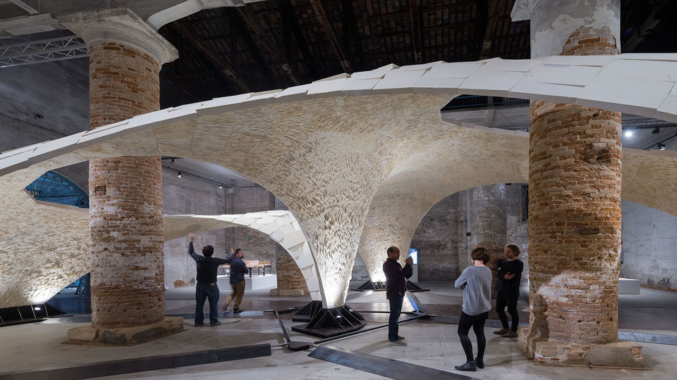

Retrieving a C# out Argument Value in Python
Here is a short note on two interesting little items that just cropped up:
- Retrieving a C#
outargument value in Python - ETH Zurich Sandstone Vault at the Venice Architecture Biennale
Retrieving a C# out Argument Value in Python
This issue was raised and solved by Peter aka KOP in the Revit API discussion forum thread on door and window areas:
Question: I understand that this code returns the curve loop of a cutout:
curveLoop = I.ExporterIFCUtils
.GetInstanceCutoutFromWall(
doc, wall, familyInstance, out basisY );
unfortunately, i am trying to achieve the result from the python side.
my efforts end in errors for the out basisY.
as my coding skills are still limited, can anyone help me out on this?
Answer: Issue is solved for the Python code required.
my solution went like:
for i in openingIds:
try:
bounding, orient = I.ExporterIFCUtils.GetInstanceCutoutFromWall(doc, element, doc.GetElement(i),)
print "success"
except:
print (" failed for wall %s and opening %s" %(element.Id, i))
Many thanks to Peter for sharing this useful result.
By the way, here is another explanation of writing
an IronPython method with ref or out parameter,
not related to Revit.
ETH Zurich Sandstone Vault at the Venice Architecture Biennale
I recently mentioned my visit to the Block Research Group at ETHZ and the fascinating architectural research they are practicing there, on building extremely efficient material-saving vaults.
Now they are exhibiting custom beautiful vaults at the Venice Architecture Biennale:
